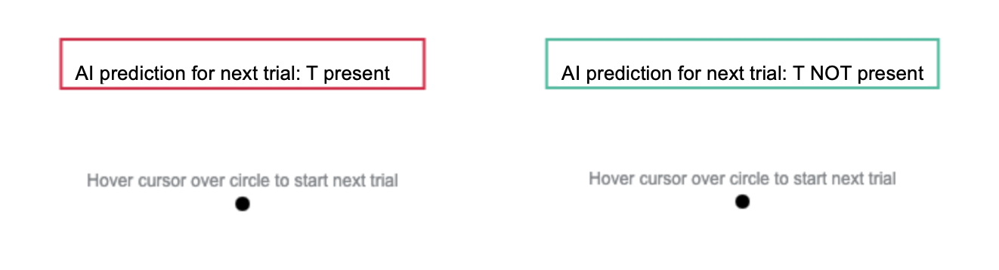
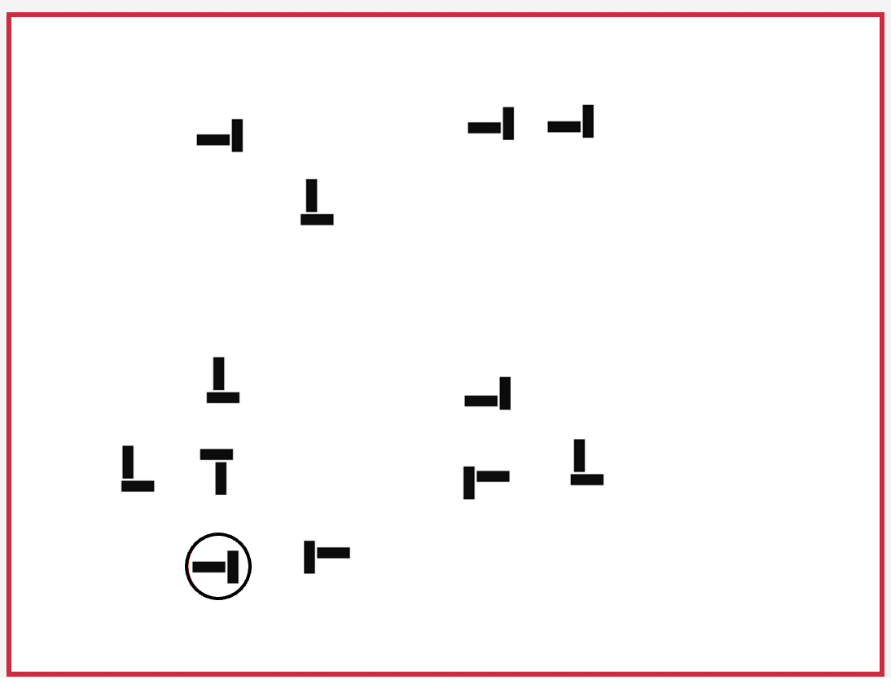
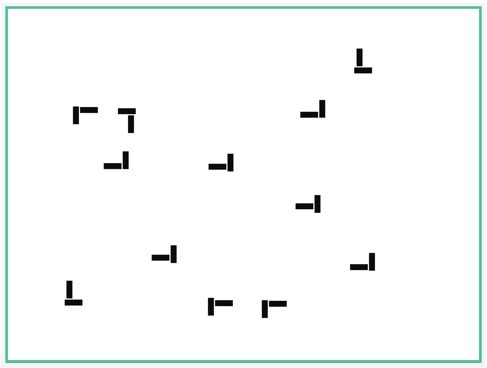
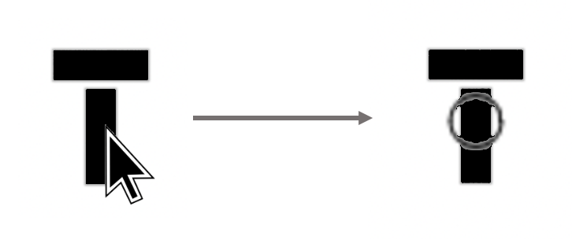

This is a visual search task where you will be required to correctly pick a target out of an array of distractors.
On each trial, you will see many bars that look like "L" shapes, these are the distractors. Your job is to find the target "T" shape hidden among the "L"s. Here are examples of both "L" and "T" shapes.
"L" Shapes (distractors)
"T" Shapes (targets)
The rotation of the "L" and "T" shapes can vary, so you may need to look very closely to find the targets.
Click the 'NEXT' button below for further instructions.
Please answer the following questions about the Visual Search Task you previously completed (remember that the task had a total of 42 trials).
On the Visual Search task, you were asked to be both fast and precise. Your average accuracy was x% and your average time taken per trial was t seconds. Your total score per our internal metric was x points.
This new task is a modified version of the previous Visual Search Task. Your goal on this task is to beat your previous score.
Click the 'NEXT' button below for further instructions.
In this task, you will be assisted by an intelligent agent whose job is to predict whether a trial contains a "T".
The intelligent agent is about as accurate as you are. It can sometimes make mistakes, though not always the same ones a human would make.
Click the 'NEXT' button below for further instructions.
Before each trial, you will see the agent's prediction of either "T present" inside a red rectangle or "T NOT present" inside a green rectangle.

After reading the prediction, hover your cursor over the circle to proceed to the trial
Click the 'NEXT' button below for further instructions.
On each trial, the color of the rectangular border corresponds to the agent's prediction on that trial. A red border indicates a "T present" prediction and a green border indicates a "T NOT present" prediction
For example:
"T is present" prediction

"T is NOT present" prediction

There will never be more than one T in each array.
Click the 'NEXT' button below for further instructions.
If you find a "T", use your mouse to select it with a click. An empty circle to mark your selection will appear if you click on either a "T" or a "L".

If you do not find a "T", do NOT click on anything
When you have finished, press the SPACEBAR to indicate that you are ready to move on.
Excellent searchers are not only accurate, but also fast and precise. Please do your best to:
Correctly find the target "T"
Avoid clicking on any distractor "L"s
Finish searching the array as quickly as possible
Your performance on this task will be evaluated based on the above criteria.
Click the 'NEXT' button for further instructions.
In practice trials ONLY: After pressing the SPACEBAR, a grey symbol will appear on your selection to indicate whether it was correct or incorrect
A check mark indicates a correct target selection, and a cross/strong> indicates an incorrect selection. A missed target will be circled in grey.
For example:
Correct
Incorrect
Missed
This feedback is only available during practice. In the main experiment, you WILL NOT see any of these markers after pressing the SPACEBAR.